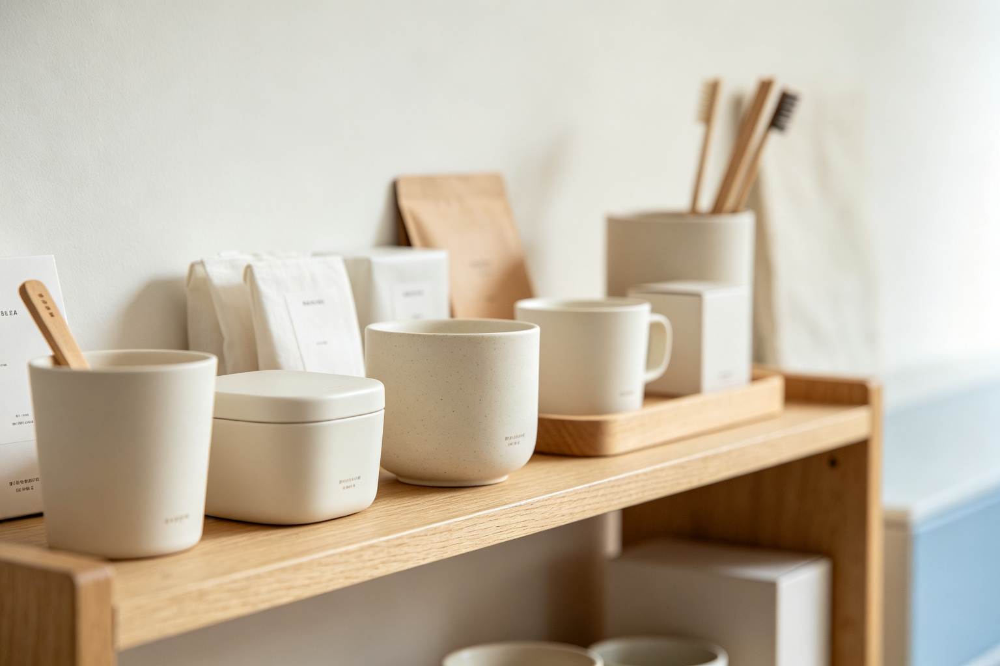

无印良品 MUJI · BEA 双极情绪美学深度分析
分析对象：无印良品 MUJI（品牌整体视觉与产品体系） 分析日期：2026-09-13 分析框架：BEA 双极情绪美学 v1.9.1
一、范式定位
- 当前范式：亲和精致（偏治愈松弛）
- 亲危配比：亲 75 : 危 25
- 第一情绪：放松被接住 · 质朴高级
- 危极综合权重 W(T)：0.250
无印良品是 BEA「亲和精致」范式的东方代表。它用大量留白、自然材质和极简设计创造治愈感，同时用精密秩序和克制的细节注入精致，达成「质朴但不廉价」的高级体验。是「柔中藏骨」的教科书案例。
二、维度极性评估
| 维度 | 危极强度(0-10) | 权重 | 极性方向 | 分析说明 |
|---|---|---|---|---|
| 图形形状 | 2.5 | 25% | 偏亲 | 大量圆角、有机形态、无尖锐装饰，但产品轮廓有清晰边界 |
| 色彩 | 2.0 | 25% | 亲 | 大地色、米白、原木色、低饱和，几乎无高饱和色，但黑色标签提供对比 |
| 字体 | 3.5 | 20% | 中性偏亲 | 无衬线字体、字重适中、排版宽松，但日文汉字的结构感提供秩序 |
| 版式构图 | 2.0 | 20% | 亲 | 大量留白、居中对称、呼吸感强，但网格秩序精密不松散 |
| 质感 | 3.0 | 10% | 中性偏亲 | 自然材质（木、棉、麻、纸）、哑光、温润，但金属和玻璃产品提供冷感对比 |
W(T) 计算： - 图形：0.25 × (2.5/10) = 0.0625 - 色彩：0.25 × (2.0/10) = 0.050 - 字体：0.20 × (3.5/10) = 0.070 - 版式：0.20 × (2.0/10) = 0.040 - 质感：0.10 × (3.0/10) = 0.030 - W(T) = 0.2525 ≈ 0.25
三、BEA 四维评分
| 维度 | 得分 | 满分 | 评价 |
|---|---|---|---|
| 双极张力 | 22/25 | 25 | 对立微妙：自然vs人工、温润vs克制、留白vs秩序，柔中藏骨 |
| 结构秩序 | 25/25 | 25 | 秩序感极强：全局统一的设计语言、精密网格、跨产品一致性 |
| 阈值安全 | 24/25 | 25 | 极度安全：无任何越阈元素，认知负荷极低，跨文化接受度高 |
| 语境适配 | 16/25 | 25 | 匹配日式和极简爱好者，但对追求个性和刺激的用户偏平淡，时代位置偏保守 |
| 总分 | 87/100 | 100 | 优秀作品 |
四、张力×秩序定位
当前位于：中张力×高秩序 = 美感黄金区（偏亲和侧）
无印良品的张力不来自强烈的对立，而来自微妙的「柔中藏骨」——自然材质里的精密秩序、温润质感里的克制边界、大量留白里的严谨网格。高秩序把微妙的张力消化为高级感，是 BEA 黄金区偏亲和侧的典型案例。
五、问题诊断
1. 个性表达不足（语境适配短板）
- 问题：过度克制的设计语言导致个性表达不足，年轻用户可能觉得「太无聊、没特色」
- 违反法则：受众阈值匹配（对追求刺激的用户张力不足）
- 影响人群：Z世代、追求个性的用户、潮流爱好者
2. 张力偏弱（双极张力可提升）
- 问题：整体危极权重仅 0.25，接近治愈松弛边界，长期接触可能产生「审美疲劳」
- 违反法则：倒 U 唤醒曲线（张力偏低，唤醒不足）
- 影响：品牌记忆点偏弱，容易被模仿和替代
3. 价格与定位矛盾（语境适配短板）
- 问题：「无品牌」定位但价格偏高，部分用户觉得「这么简单还这么贵」
- 违反法则：语境一致性（视觉极简但价格不极简）
- 影响：大众用户接受度受限，品牌认知存在矛盾
六、改进处方
处方1：推出个性子系列（优先级：高）
- 维度：语境适配
- 具体做法：在主品牌（亲和精致）之外，推出更有个性、更有张力的子系列（如 MUJI LABO），面向年轻用户，允许更高的危极权重（0.35-0.45）
- 预期效果：语境适配 +3~5分，覆盖更广泛用户群体
处方2：增加限量联名系列（优先级：中）
- 维度：双极张力（由 T2.5 整体提升到 T3.0）
- 具体做法：与艺术家、设计师推出限量联名系列，在保持秩序感的前提下增加视觉张力，制造话题和记忆点
- 预期效果：双极张力 +1~2分，品牌话题度提升
处方3：强化「精密感」叙事（优先级：高）
- 维度：语境适配
- 具体做法：在营销中强调「看似简单实则精密」的设计哲学，用工艺细节和材料创新支撑价格，化解「简单还贵」的认知矛盾
- 预期效果：语境适配 +2~3分，品牌价值感提升
七、总结
无印良品是 BEA「亲和精致」范式的东方教科书。它用大量留白、自然材质和极简设计创造治愈感，用精密秩序和克制细节注入精致，达成「质朴但不廉价」的高级体验。87分的优秀作品，主要短板在语境适配（个性不足、价格矛盾）和张力偏弱（接近治愈边界）。
核心启示：亲和范式的高级感不来自「更柔」，而来自「柔中藏骨」——用极致的秩序和精密感支撑柔和的外表。无印良品的留白不是空，而是精密计算后的空；它的简单不是简陋，而是去除一切多余后的克制。这是它区别于「廉价极简」的核心防线。
本分析基于 BEA 双极情绪美学 v1.9.1 框架，作者：星空本空，CC BY 4.0